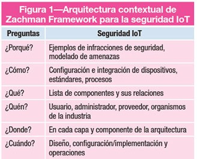

Controles y Auditoría del IoT
17 Noviembre, 2019
En los posts anteriores comenté varios temas relacionados con el IoT como: una explicación de esta tecnología, tendencias dentro de la industria y riesgos que el uso indiscriminado y descontrolado de esta tecnología pueden generar. Pero, ¿cómo se pueden controlar estos dispositivos?
El hecho de que existan miles y miles de diferentes dispositivos IoT y cada uno de ellos tenga diferentes tipos de comunicaciones entre ellos, dificulta la creación de un estándar.
Al inicio del IoT, para los protocolos de autenticación usuario-dispositivo y dispositivo-usuario se utilizaron protocolos ya existentes. Más tarde, varios investigadores empezaron integrando otros protocolos de identificación y autenticación como OpenID y OAuth2 pero aunque estos permitían facilitar la comunicación entre usuarios y dispositivos, existían casos como en los de las “Smart Cities” y servicios industriales en los que estos protocolos se quedaban cortos. [1]
Este problema ha acabado creando una enorme diversidad de tipos de comunicaciones y dispositivos que dificulta enormemente la creación de un estándar para poder mantener un control generalizado de los dispositivos de IoT.
A pesar de la falta de un estándar, el gobierno de los Estados Unidos entre otros, ha dado algunos pasos para prevenir la posibilidad de brechas de seguridad en los dispositivos de seguridad. Sin ir más lejos, el Departamento de Seguridad Nacional ha creado seis principios estratégicos para proteger estos dispositivos: [2]
- Incorporar la seguridad en la fase de diseño.
- Actualizaciones avanzadas en la gestión de la seguridad vulnerabilidades.
- Basarse en prácticas de seguridad comprobadas.
- Priorizar las medidas de seguridad según el impacto potencial.
- Promover la transparencia alrededor del IoT.
- Promover la conectividad cuidadosa y deliberada.
También existen algunos marcos como por ejemplo el marco de Zachman. Este marco trata de comprender ideas complejas mediante las primitivas preguntas qué, cómo, cuándo, quién, donde y por qué. [3] Al aplicar el marco de Zachman a la arquitectura IoT podemos obtener lo siguiente:
Siguiendo esta tabla es más fácil auditar y controlar un dispositivo de IoT. Además, si se le echa un vistazo a la fila “Where”, podemos ver que se le da importancia a cada componente de cada capa. Esto es algo que no siempre se tiene en cuenta, pero es algo capital para comprender la seguridad IoT. Un buen control de la seguridad debe tener en cuenta la seguridad por cada capa de la arquitectura y por cada comunicación que cada una de esas capas tienen con las demás. De esta manera también se comprenderá si este dispositivo tiene alguna capa en la nube o no y lo que ello puede significar a nivel de seguridad. [4]
Existen más instituciones las cuales se han centrado en crear marcos para la protección de los dispositivos de IoT. Por ejemplo, el Instituto Nacional de Estándares y Tecnología de EEUU [5] ha creado un informe con el objetivo de ayudar a las organizaciones a mejorar la ciberseguridad de esta tecnología tratando de abarcar los principales problemas de esta tecnología como la protección de la seguridad del dispositivo, la protección de la seguridad de la información y la protección de la privacidad del individuo, entre otros. [6]
Como conclusión final, se podría decir que la seguridad de la IoT a menudo carece de prioridad cuando se diseñan y aplican los sistemas. La seguridad de la IoT no significa solamente seguridad a nivel de dispositivo, además de esto, es necesaria aplicarla en todos los componentes y capas del sistema y para ello, es necesario abordarlo en todas las fases del ciclo de vida del sistema, incluidas las fases de diseño, instalación, configuración y funcionamiento.
Además, las contraseñas y claves de certificado sólidas, los nombres e identificadores de dispositivos o hosts difíciles de adivinar, la supervisión, el análisis de registros, la gestión proactiva de usuarios y dispositivos y las recomendaciones de seguridad de todas las organizaciones que se dediquen a este dominio, como por ejemplo, el anteriormente mencionado Instituto Nacional de Estándares y Tecnología de la EEUU, son de vital importancia para lograr una buena seguridad en un sistema IoT.
Referencias
- << Computer Cybersecurity >>, IEEE Computer Society, vol 51 no 4 (2018): 18
- << Strategic Principles for Securing the Internet of Things (IoT) >>, U.S. Department of Homeland Security, acceso el 15 de Noviembre del 2019, https://www.dhs.gov/sites/default/files/publications/Strategic_Principle s_for_Securing_the_Internet_of_Things-2016-1115-FINAL_v2-dg11.pdf
- << The Internet of Things: What Is It and Why Should Internal Audit Care? >>, Knowledge Leader, acceso el 22 de Octubre del 2019, https://www.knowledgeleader.com/knowledgeleader/content.nsf/web +content/arttheinternetofthings
- << The Concise Definition of the Zachman Framework >>, Zachman International Enterprise Architecture, acceso el 7 de Noviembre del 2019, https://www.zachman.com/about-the-zachman-framework
- << IoT necesita una mejor seguridad >>, ISACA Journal Volume 3, 2017, https://www.isaca.org/Journal/archives/2017/Volume-3/Pages/iot- needs-better-security-spanish.aspx
- << Instituto Nacional de Estándares y Tecnología >>, Wikipedia, acceso el 17 de Noviembre del 2019, https://es.wikipedia.org/wiki/Instituto_Nacional_de_Est %C3%A1ndares_y_Tecnolog%C3%ADa
- << Defensa Frente a las Ciberamenazas >>, CCN-CERT, acceso el 17 de Noviembre del 2019, https://www.ccn-cert.cni.es/seguridad-al-dia/ noticias-seguridad/8336-recomendaciones-del-nist-para-proteger-los- dispositivos-iot.html